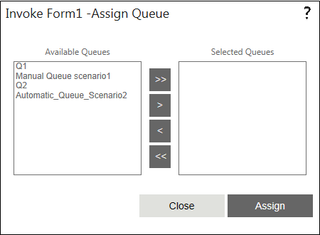

No
Assign Queue(s) Property Window
You can select the queues to which the Invoke Form work item has to be sent in this property window. To access this window, click the button in the 'Assign Queue(s)' property.

Assign Queue(s) Properties window for Invoke Form
The window has a pair of list boxes to specify the queue(s). The Available Queues list shows all the available queues. You can select the required queue(s) from this list box. The Selected Queues list shows all the selected queues to which the activity will be assigned.
You can use the following buttons located between the list boxes to move the queues to and from the list boxes.
At the bottom of the window you will find the following buttons:
Assigning queue system variable
To assign queues instead of setting the queue through Assign Queue property, add a variable with a name prefixed by '^', with the following syntax:
"^"+ CurrentActivity.Name + "_QueueVariable".
For example, if the activity name is 'Approval1' then declare the variable as ^Approval1_QueueVariable in the Start activity with the Type as String. Using the "Update Variable" activity, assign the queue-id (GUID) for this variable in the workflow.
To assign multiple queues, specify the queue-ids with semicolon (;) as the separator. Skelta.HWS.Queue.QueueCollection class can be used to retrieve queue information.